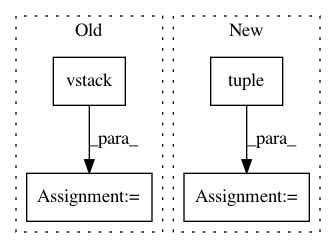

39efccc696a1c20745a52cc50935cdc24f92230d,secuml/core/classif/classifiers/__init__.py,Classifier,_predict_streaming,#Classifier#,146
Before Change
if matrix is None:
matrix = [row]
else:
matrix = np.vstack((matrix, row))
if num_rows >= stream_batch:
ids = instances_ids.get_from_ids(ids)
predictions = self._update_streaming_predictions(predictions,
matrix, ids)
After Change
num_batches = instances_ids.num_instances() // stream_batch
num_remaining = instances_ids.num_instances() % stream_batch
for i, batch in enumerate(range(num_batches)):
matrix = np.vstack(tuple(next(features_iter)
for _ in range(stream_batch)))
ids = instances_ids.ids[i*stream_batch:(i+1)*stream_batch]
ids = instances_ids.get_from_ids(ids)
predictions = self._update_streaming_predictions(predictions,
matrix, ids)
In pattern: SUPERPATTERN
Frequency: 3
Non-data size: 4
Instances
Project Name: ANSSI-FR/SecuML
Commit Name: 39efccc696a1c20745a52cc50935cdc24f92230d
Time: 2019-05-09
Author: anael.beaugnon@ssi.gouv.fr
File Name: secuml/core/classif/classifiers/__init__.py
Class Name: Classifier
Method Name: _predict_streaming
Project Name: librosa/librosa
Commit Name: 9b95e0f07b60b6a144893dcc506dfaf90db61c95
Time: 2020-05-18
Author: bmcfee@users.noreply.github.com
File Name: librosa/feature/utils.py
Class Name:
Method Name: stack_memory
Project Name: ANSSI-FR/SecuML
Commit Name: 39efccc696a1c20745a52cc50935cdc24f92230d
Time: 2019-05-09
Author: anael.beaugnon@ssi.gouv.fr
File Name: secuml/exp/data/features.py
Class Name: FeaturesFromExp
Method Name: get_matrix